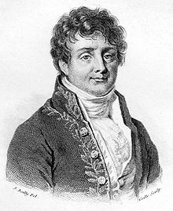

Lexique
- Exoplanète: Les exoplanètes sont des planètes qui ne tournent pas autour du Soleil, elles tournent autour d'une autre étoile. On parle aussi de planètes extra solaires.
- Albédo: L'albédo est le pouvoir réfléchissant d'une surface, soit le rapport de l'énergie lumineuse réfléchie à l'énergie lumineuse incidente.
- UA: unité astronomique, basée sur la distance Terre-Soleil (l’unité astronomique est définie comme valant exactement 149 597 870 700 m)
- Planète tellurique: planète composée de roches et de métaux dont la surface est solide.
- Planète gazeuse: est une planète composée essentiellement de gaz légers, c’est-à-dire d’hydrogène et d’hélium.
- Atmosphère: enveloppe de gaz entourant une planète.
- Kelvin: unité de mesure de température de convention scientifique qui est égale à θ + 273.15 d'où θ est la température en Celsius.
- Cellule: élément de base fonctionnel et structural qui compose les tissus et les organes des êtres vivants.
- Organique: relatif aux organes, à la constitution même d’un être vivant.
- Ejnar Hertzsprung: (né le 8 octobre 1873 à Copenhague ,mort le 21 octobre 1967 à Roskilde) est un chimiste et un astronome danois. Durant la période 1911-1913, il développa le diagramme de Hertzsprung-Russell avec Henry Norris Russell.
- Henry Norris Russell: (né le 25 octobre 1877 à Oyster Bay dans l'État de New York, mort le 18 février 1957 à Princeton au New Jersey) Astronome américain.
- Effet de Serre:Découvert en 1827 par le mathématicien français Joseph Fourier (né le 21 mars 1768 à Auxerre, mort le 16 mai 1830 à Paris); Ce processus naturel conserve les rayons infrarouges grâce à certain gaz permettant de rechauffer une atmosphère.
- Joseph Stefan: Physicien et mathématicien austro-hongrois connus pour sa loi sur le rayonnement du corp noir.
- Ludwig Boltzmann: Physicien et philosophe autrichien. Il est considéré comme le père de la physique statistique et défenseur de l’existence des atomes.
- Bilan radiatif: Le bilan radiatif est la différence entre la part du rayonnement incident absorbé par une planète et son atmosphère, qui réchauffe cet ensemble, et le rayonnement thermique réémis par cet ensemble vers l'espace.
- Champ magnétique: Espace où s'exerce des actions entre les charges électriques.